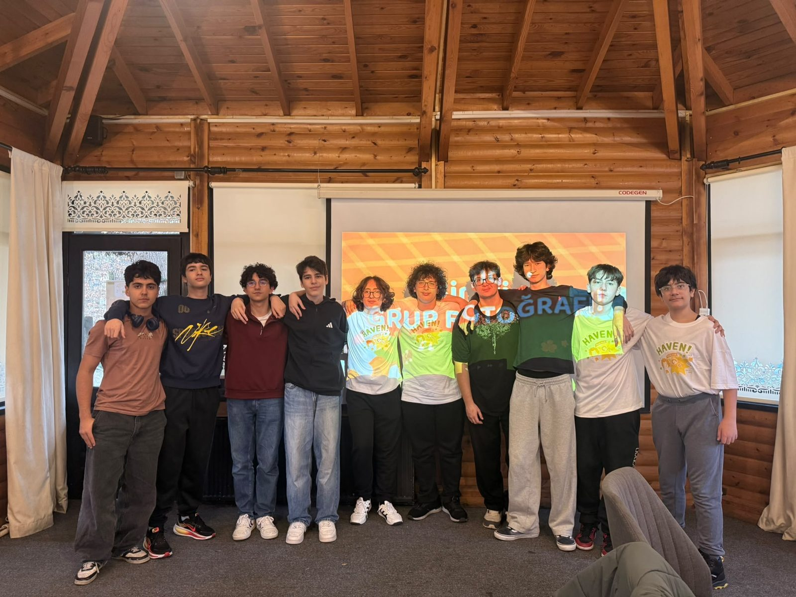
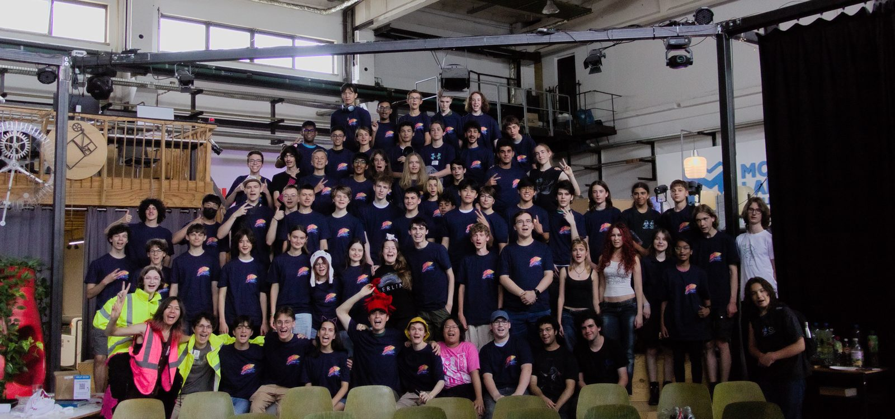
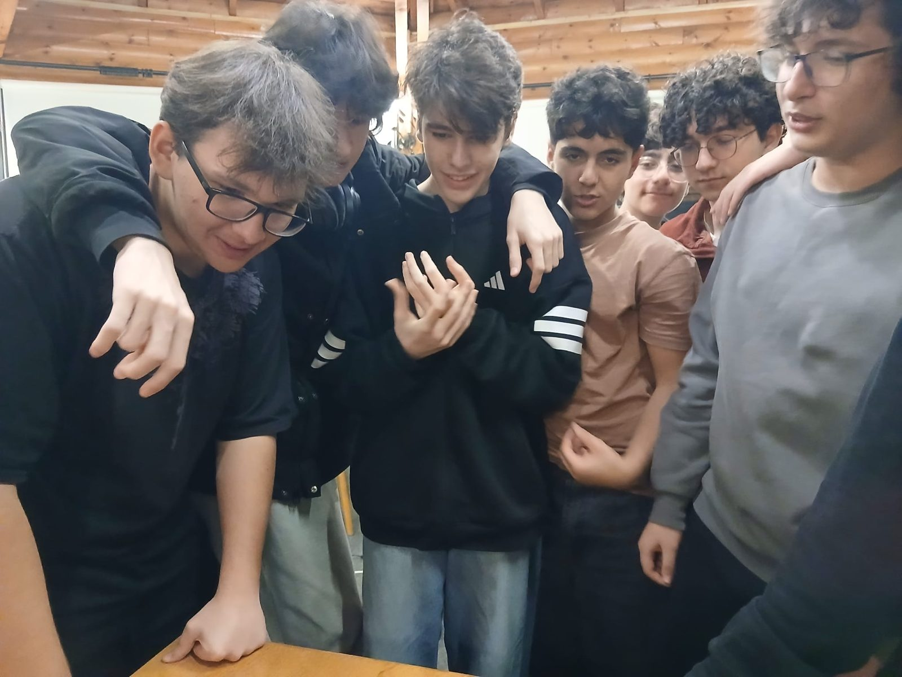
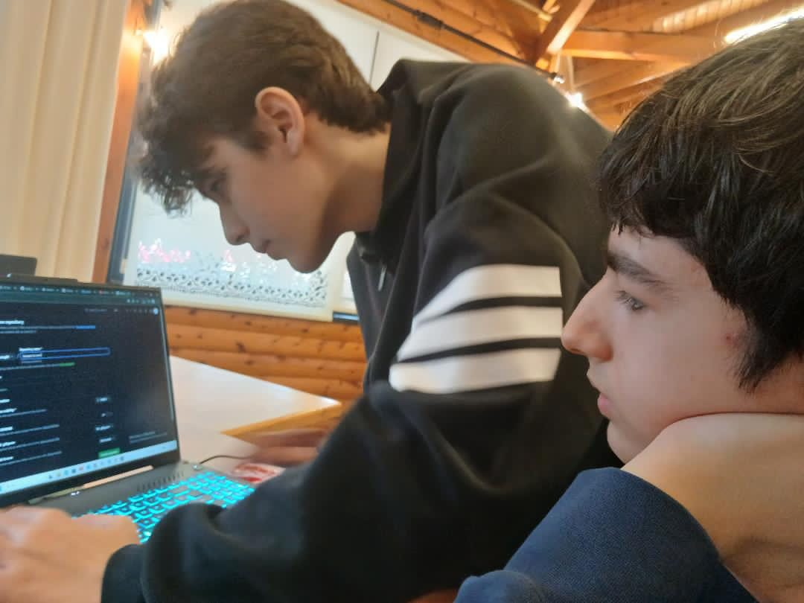

10th grade · Sakarya, Turkey
Hi, I am Perit.
I am a young person who loves learning, improving myself and creating things.
Projects
Haven Sakarya
Point of contactA 24-hour game jam held in 200+ cities across 60+ countries. I lead the Sakarya site.
Horizons Europe
ParticipantA three-day hackathon in Berlin. Travel, food and drink were all covered.
#cut
OrganizerParticipants wrote code that made music. The songs were pressed onto CDs and mailed to them.
#save
FounderParticipants write code, and every hour coded sends a donation to Make-A-Wish to help grant children's wishes. Still in development; legal obstacles and false claims about it have been overcome.




Tech stack
- Python
- Java
- HTML
- CSS
- JavaScript
- Wolfram Language
Wolfram certificates
- Practical Programming with Wolfram Language
- Programming and Development in Wolfram Language
- Wolfram Language Programming Proficiency Office Hours, attended
School and awards
- Sakarya Cevat Ayhan Science High School
- 10th grade, GPA 96.53
- AP Calculus BC
- Score of 4, taken in 9th grade
- TEKNOFEST, Technology for Humanity
- Energy harvesting from the waste heat of air conditioners. Presented to 3 juries through BİLSEM and received full marks.
- BİLSEM
- Student. Accepted through a two-stage national exam, where about 2% of candidates are accepted.
- Deneyap
- Student. Accepted through a three-stage national exam, where about 12% of applicants are accepted.